Префектура Киото · Киото, у дворца Госё · отель
Kyoto Brighton Hotel: жить у дворца Госё, как живут киотосцы, и ездить в храмы с монахами
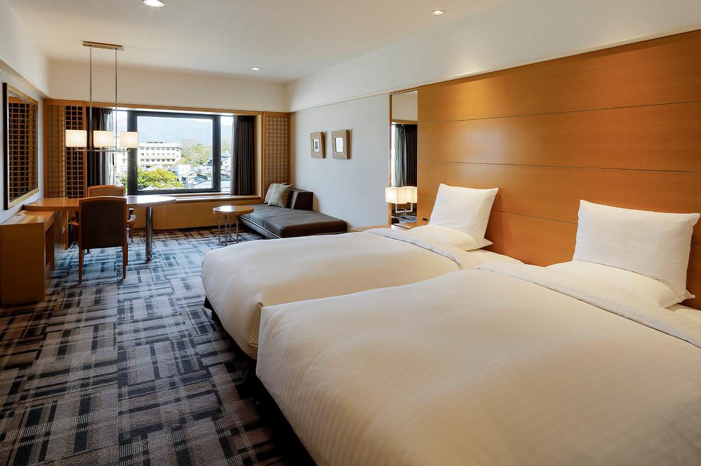
Kyoto Brighton Hotel стоит в пяти минутах ходьбы от императорского дворца Госё, в тихом квартале, куда не долетает шум больших улиц. Сюда приезжают, чтобы пожить в Киото несколько дней подряд: завтракать по-киотски, гулять по соседним лавкам и ездить в храмы, где гостей встречают сами монахи.
Место
Тихий квартал у дворца
Больше тысячи лет в императорском дворце Киото Госё жили японские императоры. Вокруг него раскинулся парк Киото-гёэн, а за парком начинаются кварталы, где тишину берегут до сих пор. Здесь, к западу от дворца, стоит Kyoto Brighton Hotel. Рядом школы чайной церемонии, старые храмы и святилища, университеты с долгой историей, и всё это жилой район, а не туристическая улица.
При этом добраться сюда легко: от вокзала Киото меньше десяти минут на метро, а от станции Имадэгава около восьми минут пешком. Отель вполне можно назвать центром города, но центром спокойным.
Главная идея здесь в том, чтобы остаться на несколько ночей и прожить в Киото хотя бы пару дней так, как живут сами киотосцы. А если хочется совета, где поесть, что купить или какой храм выбрать под настроение, всегда можно спросить у консьержа: он хорошо знает округу.
Важно для тех, кто планирует поездку: 30 ноября 2026 года отель закрывается на полную реконструкцию. Открыться снова он должен зимой 2028 года, уже под именем Kyoto Brighton Hotel, Curio Collection by Hilton.
Важно для тех, кто планирует поездку: 30 ноября 2026 года отель закрывается на полную реконструкцию. Открыться снова он должен зимой 2028 года, уже под именем Kyoto Brighton Hotel, Curio Collection by Hilton.
Номера
Глубокие комнаты, как в городском доме
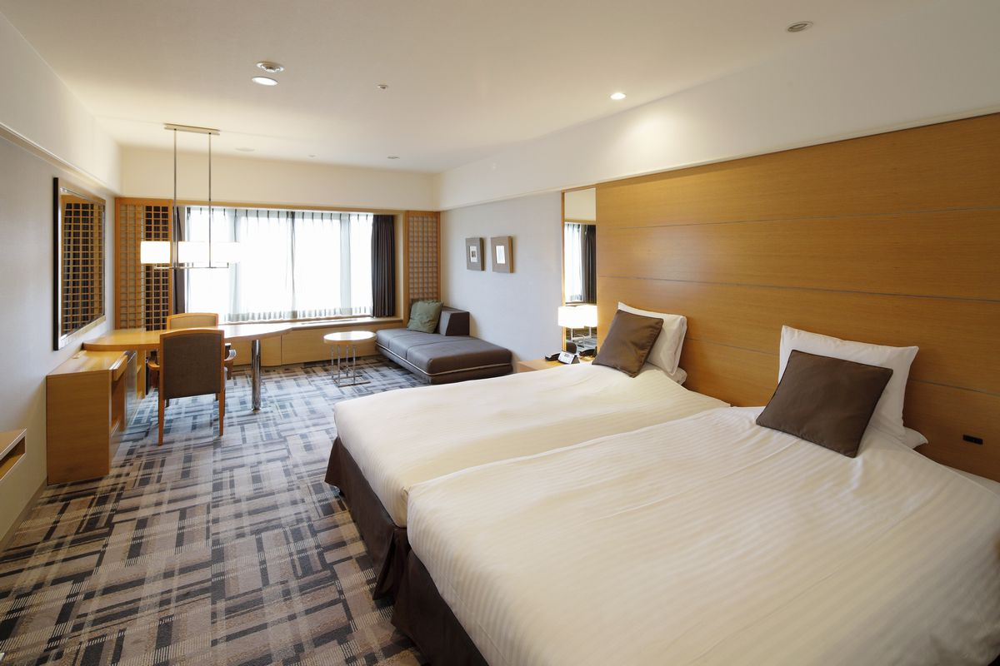
Комнаты в отеле устроены по образцу киотского городского дома, матия. Такие дома узкие с улицы и глубокие внутрь, и номер тоже вытянут: от двери сначала идёт ванная с отдельной зоной для мытья, потом спальня, а у окна гостиная. Стандартный номер занимает 42 квадратных метра, самые маленькие не меньше 36, так что чемодан можно раскрыть без всяких хитростей. Кровати Dream Journey Bed выбраны ради крепкого сна.
Цвета в номерах спокойные, а детали японские: плетёные шнуры кумихимо, лампы в форме бумажных фонарей андон и деревянные решётки кумико.
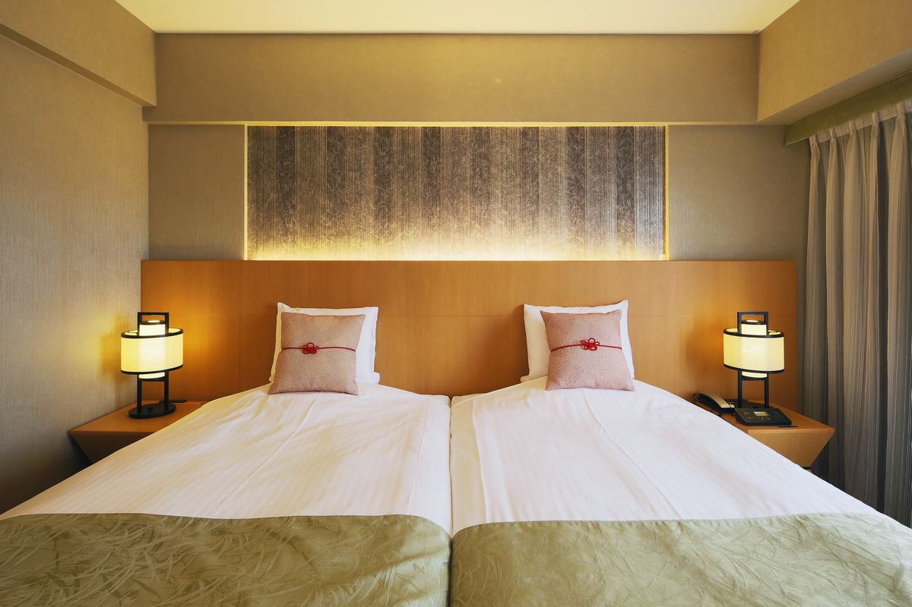
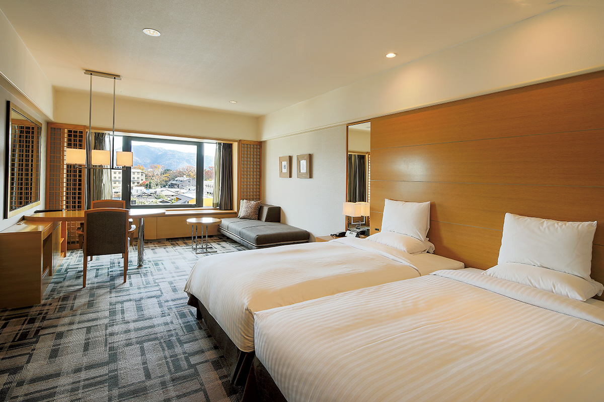
Утро
Завтрак, ради которого стоит проснуться
Киотское утро в отеле начинается с завтрака. В ресторане японской кухни HOTARU подают рисовую кашу асагаю под нежным соусом (её можно заменить обычным рисом), омлет дасимаки, солёного лосося на гриле и ещё несколько блюд, всего восемь. Эта каша не менялась с самого открытия отеля, и однажды её признали лучшей в западной Японии. Тем, кто хочет европейский завтрак, накрывают буфет в ресторане FEERIE.
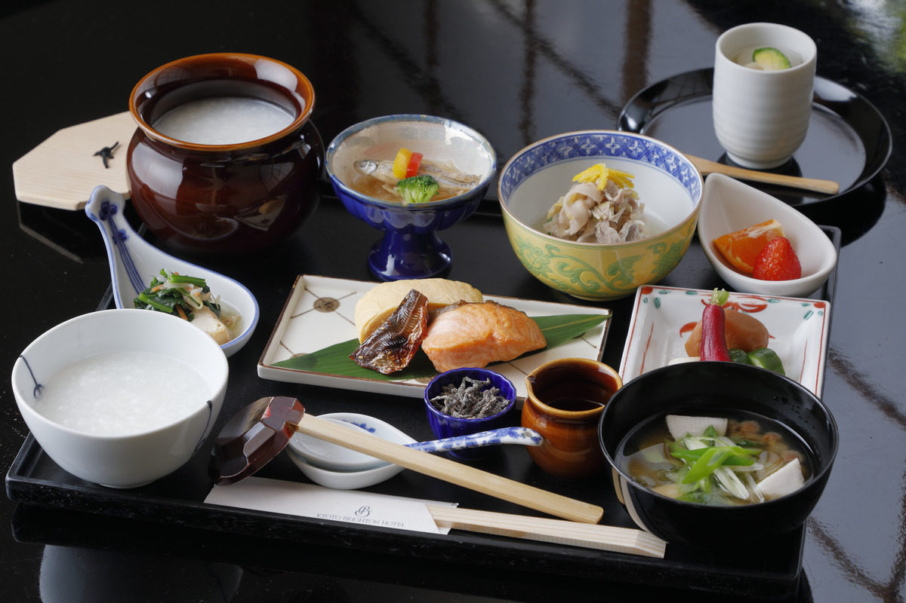
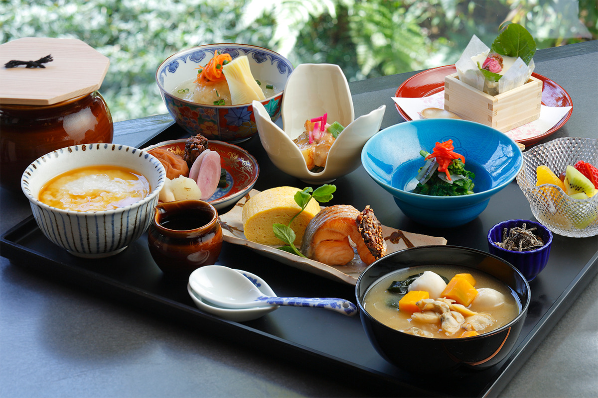
Тем, кто остаётся на вторую ночь, стоит заказать особый завтрак. У ресторана HOTARU есть отдельные комнаты с окнами в маленький внутренний сад, и сезонные блюда здесь подают на красивой посуде, в том числе на лаковых тарелках мастерской «Дзохико». В день съёмки на столе были репа с белой рыбой, томлённые в сакэ, краб с зеленью мибуна, тофу с юбой из местной сои, курица из Тамбы, приготовленная двумя способами, омлет дасимаки, соленья, суп на белом мисо и каша с морским ушком. В 2021 году такой завтрак стоил 5500 иен, его готовили всего на десять человек в день и принимали заказы до 17:00 накануне.
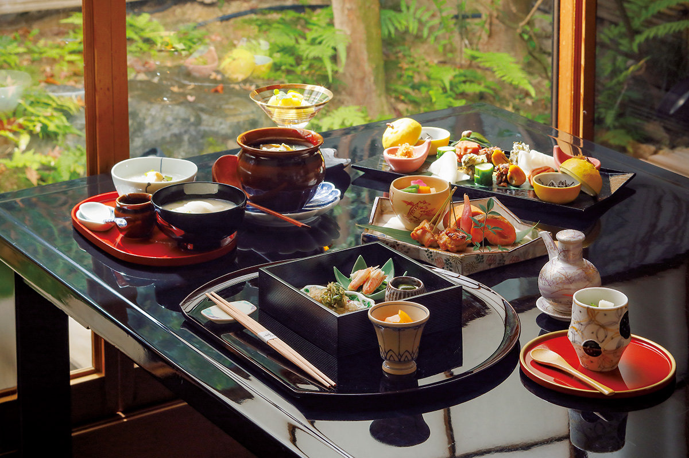
Особый завтрак в ресторане HOTARU
- Телефон
- +81 75-441-4344
- Часы работы
- 7:00–10:00 (последний заказ 9:30)
- Цены / Вход
- 5500 иен, по предварительному заказу до 17:00 накануне, 10 порций в день
Прогулка
День, как у местных
После завтрака отель предлагает простой маршрут. В холле продают свежую выпечку из собственной пекарни, например булочку с кленовым сиропом и большим количеством грецких орехов. С пакетом хлеба можно за пять минут дойти до парка Киото-гёэн и устроить там ланч на скамейке.
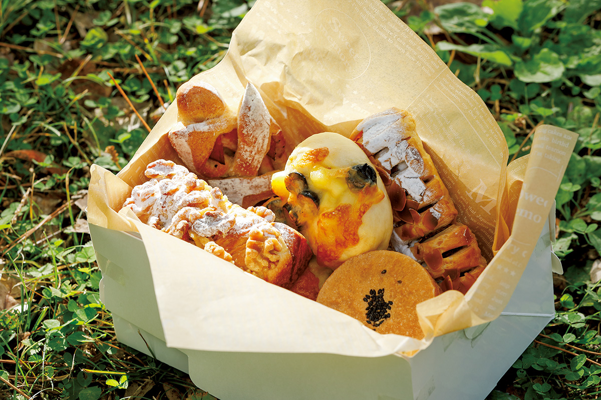
Парк занимает около 100 гектаров. Здесь живут больше ста видов птиц, а с ранней весны по очереди цветут слива, персик и сакура. Здесь отдыхают местные жители, и обедать на скамейке под пение птиц особенно приятно. Отель устраивает и частные прогулки по парку с фотографом.
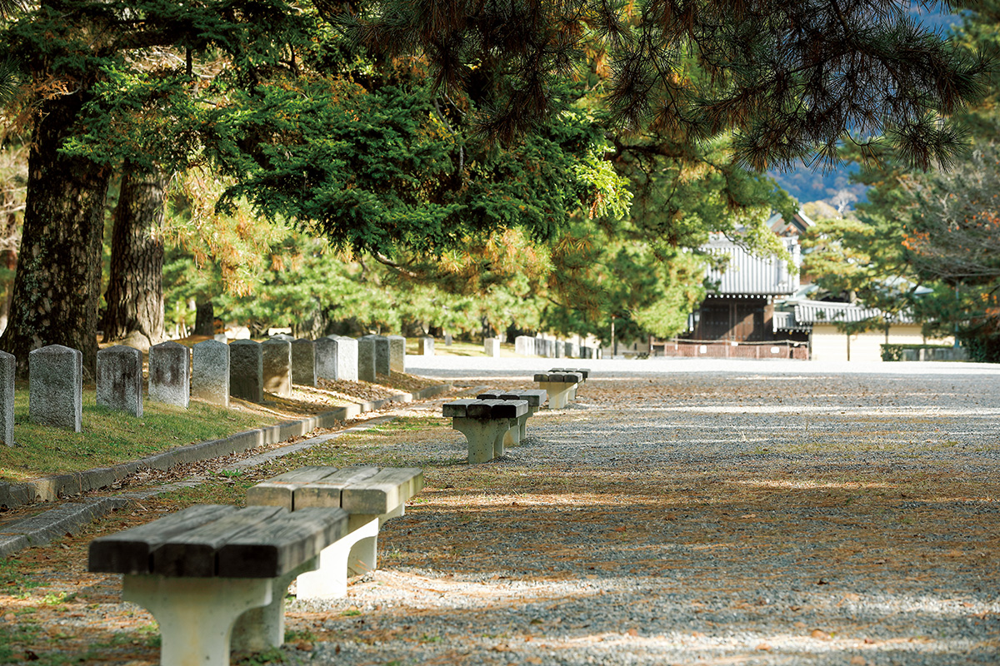
Вокруг отеля много лавок, куда киотосцы ходят каждый день: соевый соус и мисо, тофу, пшеничная клейковина фу, местное сакэ, сладости и благовония. Пешком можно дойти и до музея Раку, где хранят знаменитые чайные чаши этой семьи мастеров.
Одна из таких лавок «Саваи сёю», которую открыли в 1879 году. Этим соевым соусом пользуются известные рестораны Киото, и именно его подают к завтраку в отеле. Соус до сих пор зреет в старых бочках из криптомерии, и в лавке стоит густой запах. Выбрать бывает непросто: соусов здесь много.
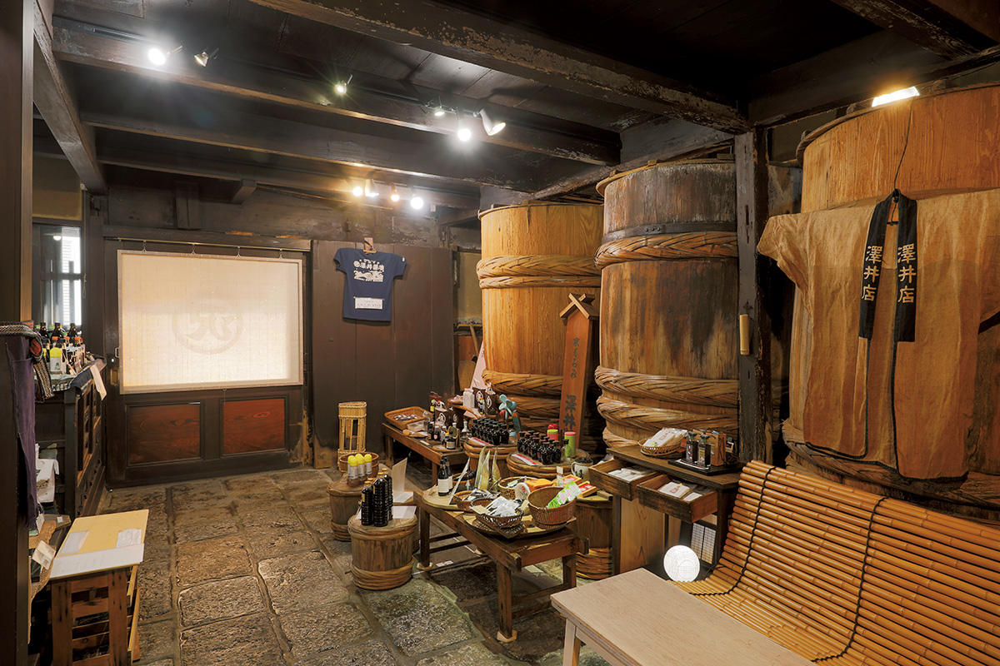
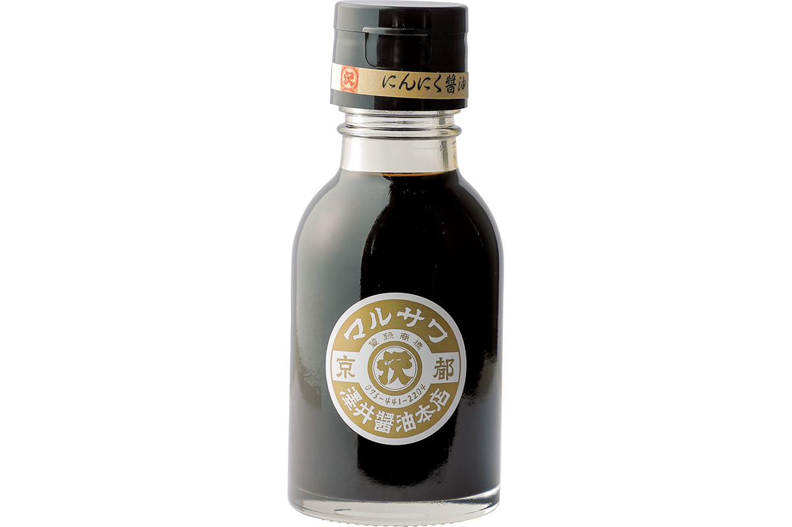
Чесночный соевый соус лавка придумала вместе с рестораном теппанъяки отеля. Аромат у него яркий, а привкус не остаётся. Его советуют добавлять в жареный рис.
«Саваи сёю»
- Адрес
- префектура Киото, Киото, район Камигё, Нака-Тёдзямати-дори, Синмати Ниси-иру, Наканотё, 292
- Телефон
- +81 75-441-2204
- Часы работы
- 9:00–17:00, в воскресенье 10:30–15:30
- Выходные
- нерегулярно
По дороге обратно можно зайти в старую кондитерскую Shioyoshiken за свежими сладостями намагаси. В номере есть венчик и чаша, а ещё порционный маття, который отель сделал вместе с чайной маркой Gion Tsujiri. Так что после прогулки можно самому взбить чай и провести неторопливый вечер.
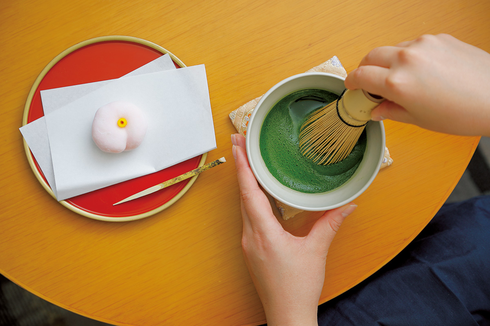
Ужин
Говядина на гриле и кайсэки
Вечером в отеле можно поужинать в одном из пяти ресторанов. В HIMOROGI жарят на плите теппан говядину Ёнэдзава высшей категории A5, мясо из других регионов Японии и морепродукты, а вина подбирает сомелье. Приправ здесь пять, среди них фирменный чесночный соевый соус на продуктах старых киотских лавок и тёртая редька с соусом пондзу.
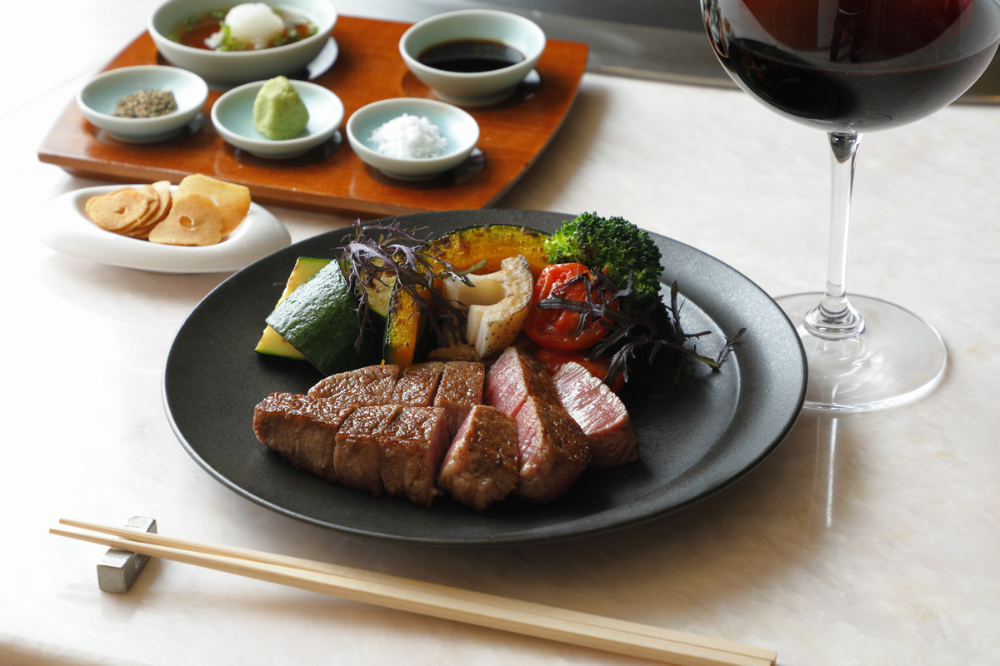
В ресторане HOTARU подают киотский кайсэки. Сезон здесь передают тонко, а бульон даси варят разный под каждое блюдо.
Экскурсии
Храм изнутри, с монахом
Отелю давно доверяют в городе, и это открывает двери, закрытые для обычных туристов. В сезон сакуры он возит гостей к знаменитым деревьям рано утром, пока не пришли толпы.
В 2022 году отель проводил частные экскурсии с гидом: гостей отвозили в один храм или святилище, и там их встречал монах или служитель, чтобы показать всё не торопясь. Такие экскурсии подходили и взрослым, и детям.
Храм Дайкаку-дзи
Храм Дайкаку-дзи в Сагано до начала эпохи Мэйдзи возглавляли императоры или члены императорской семьи. Сегодня это главный храм ветви Дайкаку-дзи школы сингон и центр школы икэбаны Сага-горю. На его территории лежит пруд Осава и стоят здания в стиле императорского дворца.
Когда в эпоху Хэйан страну поразил голод и мор, император Сага по совету Кукая собственной рукой переписал «Сутру сердца» с молитвой об избавлении от болезней. Этот свиток хранят в храме до сих пор, а открывают раз в 60 лет. Поэтому Дайкаку-дзи считают главным местом для переписывания сутры. Храм часто снимают в исторических фильмах.
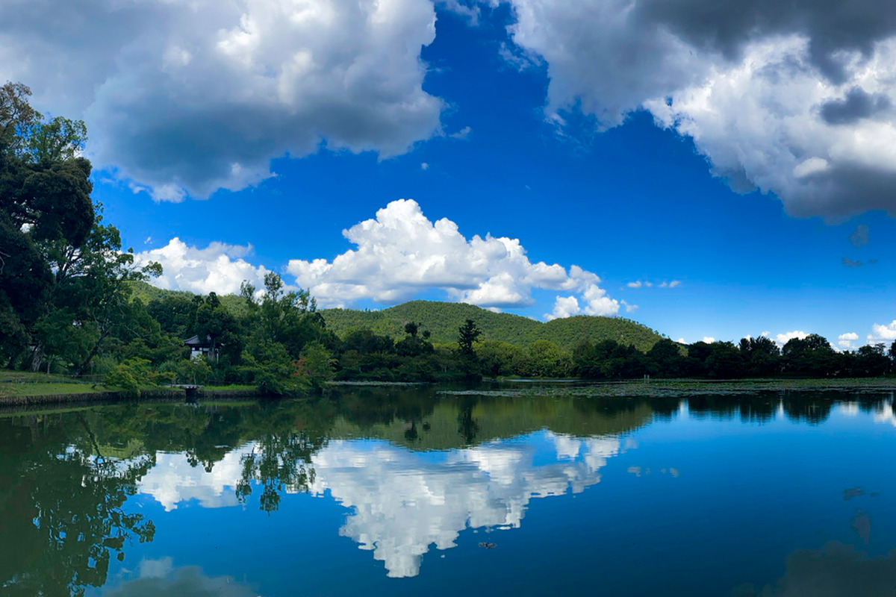
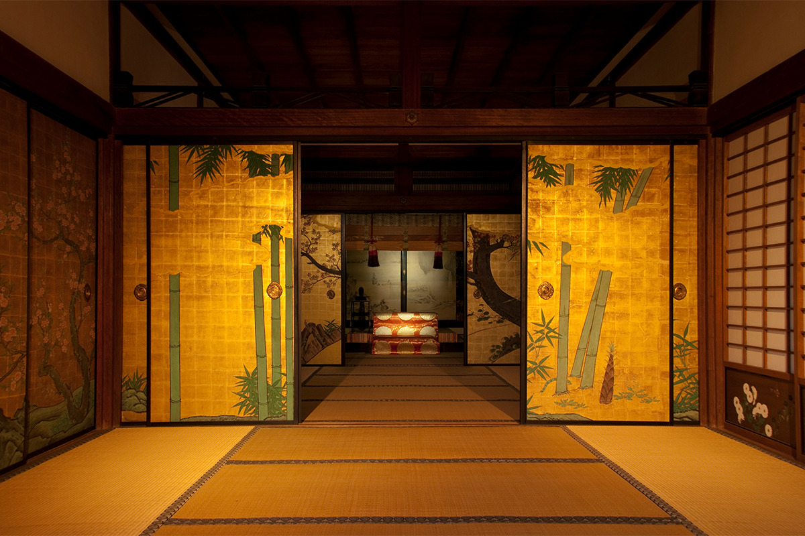
Экскурсия занимала около двух с половиной часов: на такси из отеля до храма, обход залов вместе с гидом, прогулка вокруг пруда Осава и обратно. В 2022 году она стоила от 23 800 иен на человека при двухместном размещении, вместе с ночёвкой, завтраком и такси в обе стороны.
Храм Дзуйсин-ин
Здесь, по преданию, провела последние годы Оно-но Комати, поэтесса IX века, которую в Японии считают первой красавицей своей эпохи. В храме всё связано с ней: курган, где будто бы зарыта тысяча любовных писем, статуя бодхисаттвы Дзидзо, оклеенная этими письмами, колодец, водой которого она будто бы пользовалась, наводя красоту.
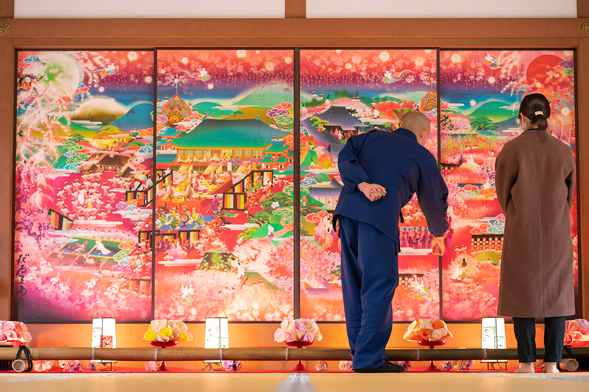
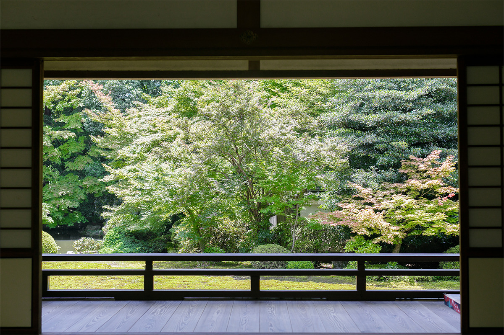
Яркие фусума о жизни поэтессы прославились в соцсетях. На экскурсии монах показывал гостям вблизи статуи Будды в главном зале и картину-обманку «Четыре любви», которые обычно видны только издалека. После экскурсии оставалось свободное время: можно было дойти до соседних храмов Дайго-дзи и Кадзю-дзи или переписать сутру. Туда гостей отвозили на такси, принимали группы от одного до восьми человек. В 2022 году экскурсия стоила от 22 800 иен на человека при двухместном размещении, с ночёвкой и завтраком. За 5000 иен добавляли постный буддийский обед.
И другие
Кроме этих двух храмов отель возил гостей в святилище Камигамо, которому больше 1300 лет и вся территория которого входит в список Всемирного наследия. В храме Тион-ин гостям показывали вблизи обычно закрытые постройки: зал Миэйдо (национальное сокровище), большую колокольню и хранилище сутр. Ещё одна экскурсия была посвящена садам, зданиям и сокровищам дзэнского храма Тофуку-дзи.
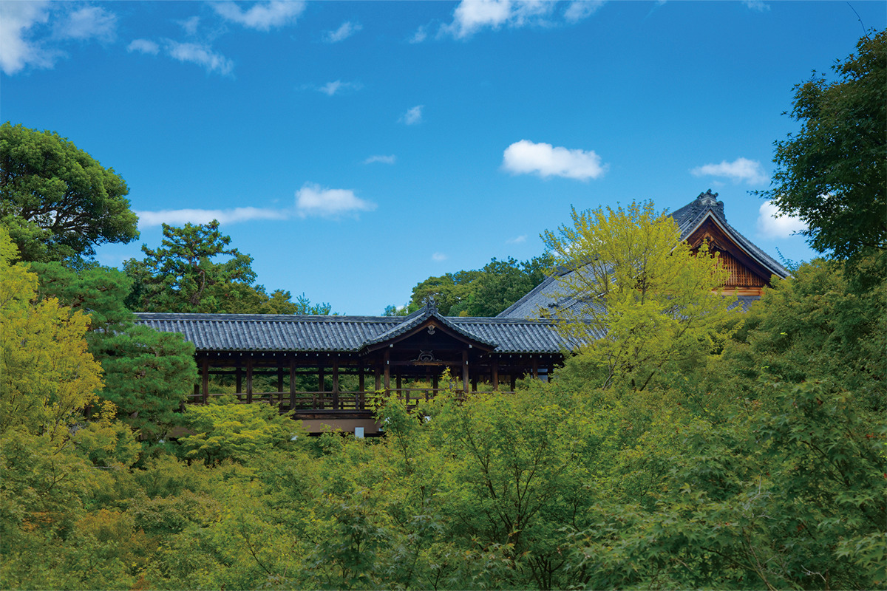
Kyoto Brighton Hotel
- Адрес
- префектура Киото, Киото, район Камигё, Синмати-дори, Накадатиури (к западу от дворца Госё)
- Телефон
- +81 75-441-4411
- Номера
- 182
- Цены / Вход
- ночь с ужином и завтраком от 25 000 иен с налогом
- Заезд / выезд
- 15:00 / 12:00
- Как добраться
- 8 минут пешком от выхода 6 станции метро Имадэгава (линия Карасума); от станции метро Карасума-Оикэ около 7 минут на автобусе отеля
Фото: Макото Ито.